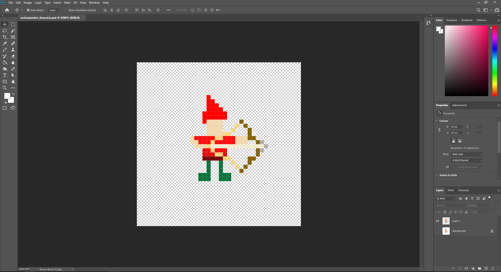
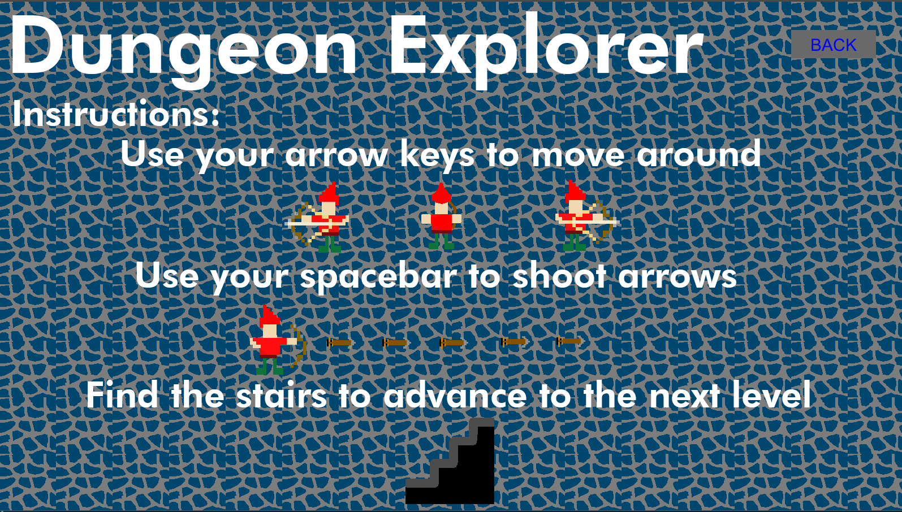

Dungeon Explorer
For the final project in my Digital Games Programming class, I was tasked with individually developing a creative, multi-level game with a clear motivation and narrative design using the Processing programming language based on Java. This project not only demanded technical proficiency but also a an understanding for user-centered design principles. Given the creative freedom to choose a game genre, I deliberated on various options, finally settling on the Roguelike style. This genre, characterized by procedurally generated levels and permadeath, resonated with my interest in unpredictability and excitement.
Tools Used: Illustrator, Processing
The Process
Before getting into the coding phase, I conceptualized the game's progression. Drawing inspiration from user-centered design principles, I focused on ensuring a player-friendly and intuitive journey. To visualize the characters and game environment, I created storyboards, providing a roadmap and goal for development. Additionally, I utilized a UML (Unified Modeling Language) diagram to structure the code effectively, applying organizational principles for efficient development.
Early Concept

UML Diagram

In addition to programming, I took also took on the creative responsibility of designing all in-game assets using Adobe Illustrator. From characters to the environment, each element was created using a pixel art style to match the overall aesthetic. Applying game design principles, I implemented features that increased the game's difficulty as players progressed, aiming for a delicate balance between challenge and enjoyment.
Archer Art Drawn in Illustrator
Enemy Art Drawn in Illustrator

Choosing a Roguelike genre not only provided technical challenges but also expanded my understanding of game development intricacies. One example of this is was integrating a complex mapping system I was yet to use before as seen in the code snippet. Throughout the project, one key challenge that emerged was balancing the increasing difficulty with maintaining an enjoyable player experience. I addressed this by iteratively playtesting and adjusting game mechanics to achieve the desired equilibrium.
Mapping code

The Game
I coded this game using Processing, and it requires a player to interact with a mouse and keyboard to play. In addition to this, the game also features hit detection between various moving objects, a health system, and different rooms to progress through. Using a finite-state machine model, I created a multi-stage game.
Gameplay
Gameplay 2

Outcome
Through this comprehensive experience, I applied structured and logical approaches such as using UML diagrams. This wasn't just to produce a game I was satisfied with but it also assisted in honing my ability to create narrative elements, understand technical intricacies, and craft meaningful user experiences. The project significantly expanded my skills in game design and object-oriented programming, offering valuable insights into the complexities of game development. Overall, "Dungeon Explorer" was a project that helped me successfully integrate creativity and precise technical execution, sharpening my skills in both areas and the final product.